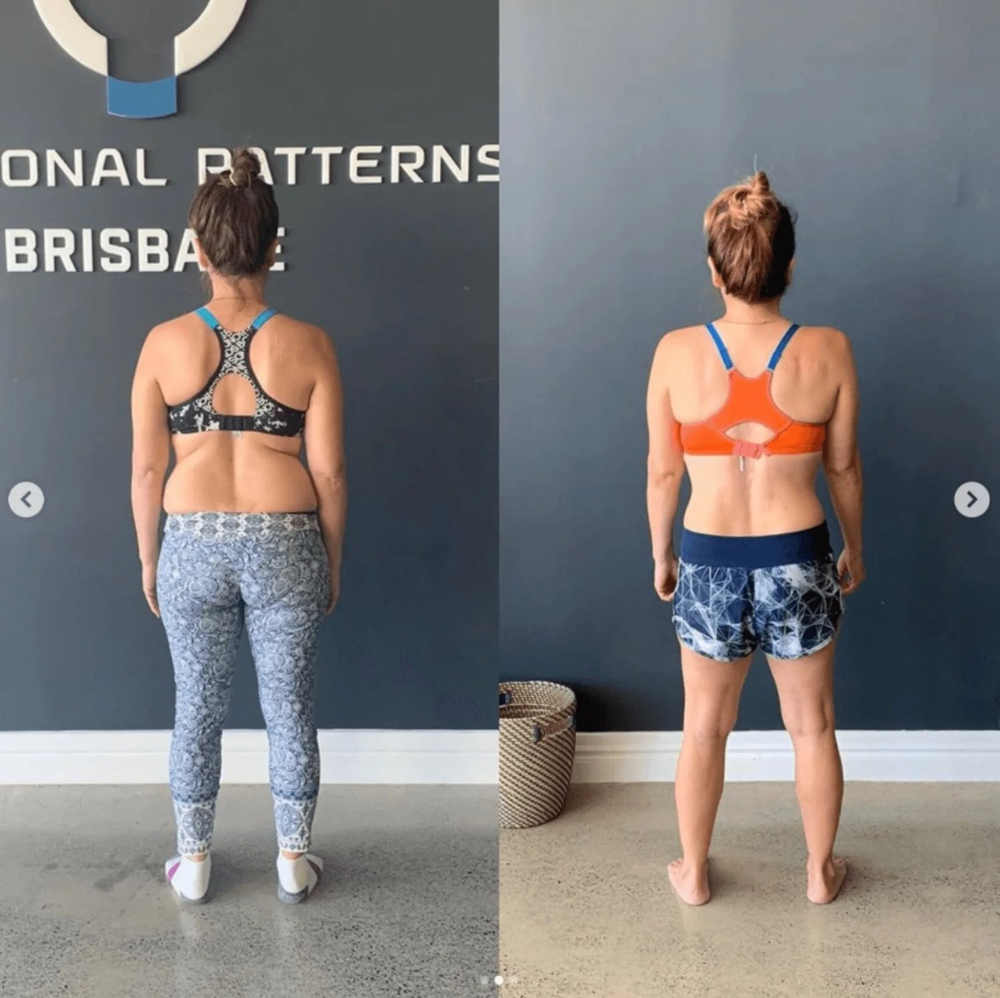
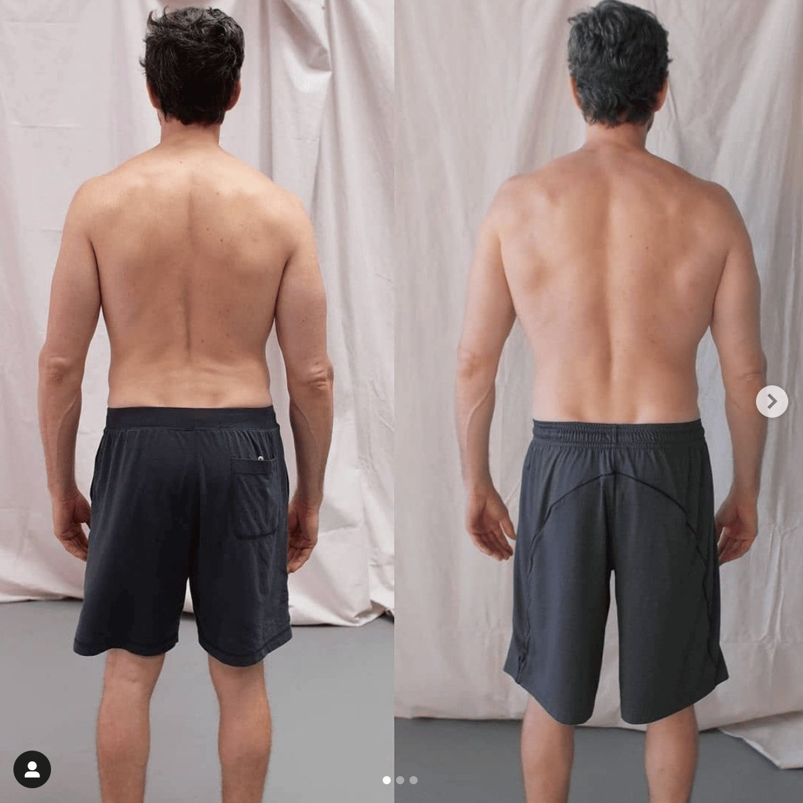

Walking and lower back pain are two things that should not go together. Unfortunately, a sore lower back when walking is something that many people face on a daily basis. If your lower back hurts when standing or walking, this blog aims to uncover why.
What causes a sore lower back when standing?
Countless reasons exist for why somebody might experience lower back pain from standing. You may have a medical condition such as herniated discs. You might be experiencing wear and tear from lifting heavy objects. Perhaps you have spinal stenosis.
Even if you have a condition, we need to identify what caused that condition in the first place. We encounter people with sore backs after standing and bad backs after walking every day in our practice.
We run a movement-based chronic pain clinic and these are the top 3 reasons we see.
-
Lack of hip rotation while walking
-
Muscle imbalances between the front line and back line
-
Poor intra-abdominal pressure from bloating and dysfunctional movement patterns
While some of these may sound advanced, we are going to break them down for you. We want you to understand how each of these may relate to you and what you should do next. If you are eager to know how to relieve back pain from standing too long, keep reading.

Before: No hip rotation, imbalanced muscle and poor intra-abdominal pressure.
After: All corrected and no more sore lower back when standing or walking
1. Lack of Hip Rotation While Walking
Hip rotation is a crucial part of how our bodies move, particularly when we walk. Ideally, your hips should rotate slightly during each step, helping to distribute forces throughout your body evenly. If your hips do not rotate properly, your lower back has to compensate.
This can cause overuse and strain in that area. This is what can result in a sore back when standing too long.
Biomechanics Breakdown:
-
What happens: When you walk, your hips should rotate as your legs move forward and backward. This rotation reduces the load on your spine and ensures that forces are shared between your hips, pelvis, and back.
-
The problem: If your hips are stiff or restricted, your lower back muscles take on extra work. This results in a back ache when walking to keep your body stable and balanced. Often, the hips do not feel stiff or restricted; they simply lack proper connection.
-
This lack of connection can cause no rotation to occur. This lack of balance can cause muscle fatigue and lower back pain after standing too long.

No hip rotation vs implementing hip rotation while walking and moving
Fascial Slings and Chains:
- The posterior oblique sling includes the glutes, lats, and thoracolumbar fascia. It helps move energy between your hips and shoulders. If your hips aren't moving properly, this sling becomes imbalanced, causing extra stress on your lower back.
Solution:
-
Exercises like hip rotations and functional movement patterns can help get your hips moving correctly. This can reduce stress on your lower back, preventing a backache when walking or standing. The only way to know which exercises your body needs is through assessment of your gait/walking.
-
This allows you to see where the rotation is excessive or lacking. You can also identify the deeper reasons around why the hips are failing to rotate correctly. For example, you may not have enough glute activation and drive.
2. Muscle Imbalances Between the Front Line and Back Line
Your body has several muscle chains or fascial lines. These include the anterior chain (front line) and posterior chain (back line). These chains help your body move in sync and feel connected. Often there is an imbalance between the muscles on the front of your body (like the quads and abs) and the back (like your glutes and lower back muscles).
When this occurs, it can cause chronic lower back pain and a weak core/glutes.
Biomechanics Breakdown:
-
What happens: If your front line muscles become tight (from too much sitting, poor posture, or weak back muscles), your pelvis may tilt forward. This forward tilt, known as anterior pelvic tilt, places extra strain on the lower back muscles as they work harder to keep you upright.
-
A correct anterior tilt is ideal, and it is not to say that an anterior tilt is incorrect. Importantly, your body must hold tension and symmetry in this position. Otherwise, chronic lower back pain will likely result.
-
A sedentary lifestyle often leads to weakened muscles. Reducing pain invloces strengthening those muscles in a way that actually matters. Most people who jump into a basic exercise program end up injured/in more pain.
-
This is because exercise and stretching, as we typically perform it, does not address the root issues. To stop a back ache standing, you need to perform physical activities that support your movement patterns and symmetry.
Reciprocal Inhibition:
- When the muscles on one side of a joint (like your hip flexors) are overactive or tight, they inhibit the muscles on the opposite side (like your glutes) from working properly. This imbalance creates a situation where your lower back muscles are compensating for the weak glutes. This can lead to pain and fatigue.
Solution:
-
Focus on balancing the strength of your front and back muscles through corrective exercises. Strengthen your glutes, hamstrings, and back, while working to release the hip flexors and quads. Release does not occur through passive stretching.
-
Genuine and lasting releases come from using the muscles correctly and MFR. MFR, myo-fascial release, gets deep into the tissue for a targeted release. Passive stretching increases the lack of stability, therefore creating more tightness in the long-term.

3. Poor Intra-Abdominal Pressure from Bloating and Dysfunctional Movement Patterns
Intra-abdominal pressure (IAP) refers to the pressure inside your abdomen, which helps stabilise your spine. When you breathe properly and engage your core muscles this pressure helps protect your lower back. However, bloating or improper core engagement can throw this off.
Correct breathing involves deeper muscles like the transverse abdominis, not just the six-pack muscles. Breathing against a retracted (pulled in) core results in increased pressure. This pressure also prevents flaccid hip movements during standing, walking or exercise which can strain the lower back.
Biomechanics Breakdown:
- What happens: If you have poor core engagement or irregular breathing patterns, your body can’t create the right amount of pressure. This creates an inability to stabilise your lower spine. This lack of support forces your lower back muscles to work harder, leading to pain when standing for long periods. It also increases compression on the spine.

Poor intra-abdominal pressure VS corrected pressure and posture
Fascial Chains and Dysfunctional Patterns:
- The deep front line includes your diaphragm, pelvic floor, and core muscles. If these structures aren’t functioning correctly (due to bloating, shallow breathing, or weak core muscles), your entire stabilising system is compromised. This causes overcompensation from your lower back muscles, resulting in discomfort or pain.
Solution:
- Practice proper breathing techniques (like diaphragmatic breathing) and exercises that strengthen your deep core muscles, such as planks, transverse twists, or controlled abdominal exercises. Reducing bloating through dietary changes can also alleviate pressure on your spine. Consider removing grains, beans, legumes and processed food from your diet.